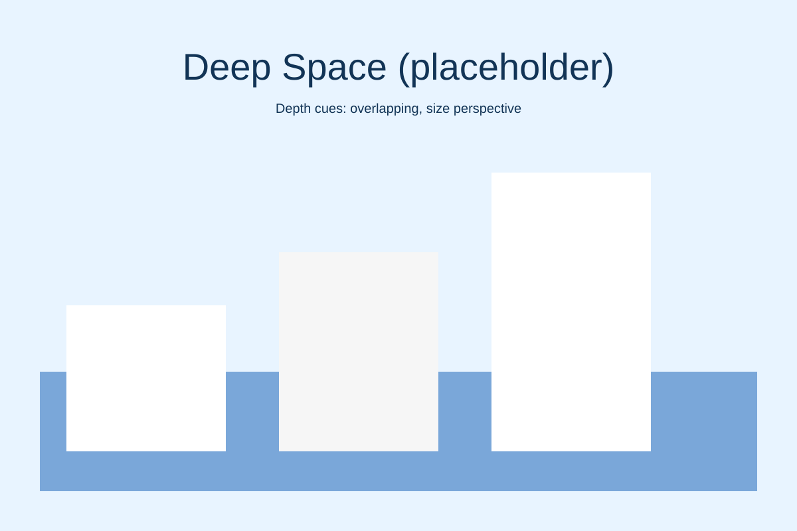
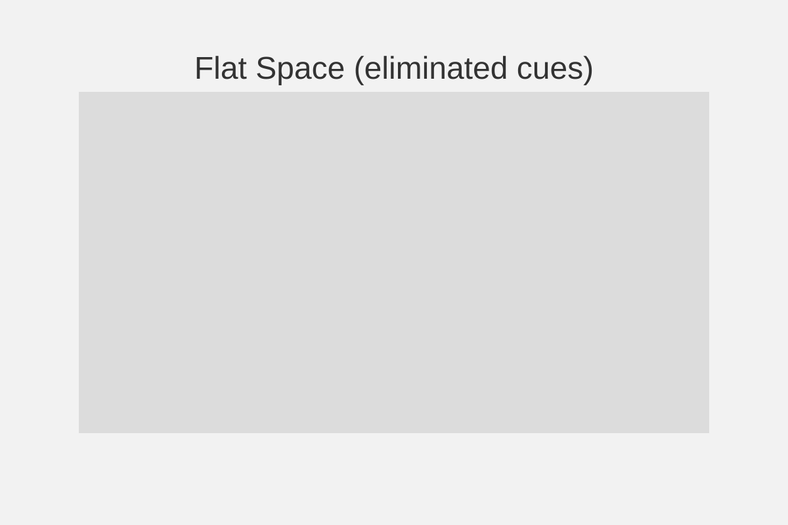
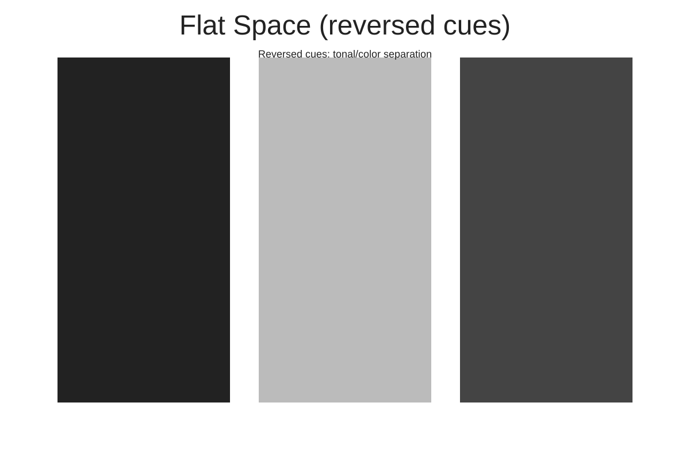
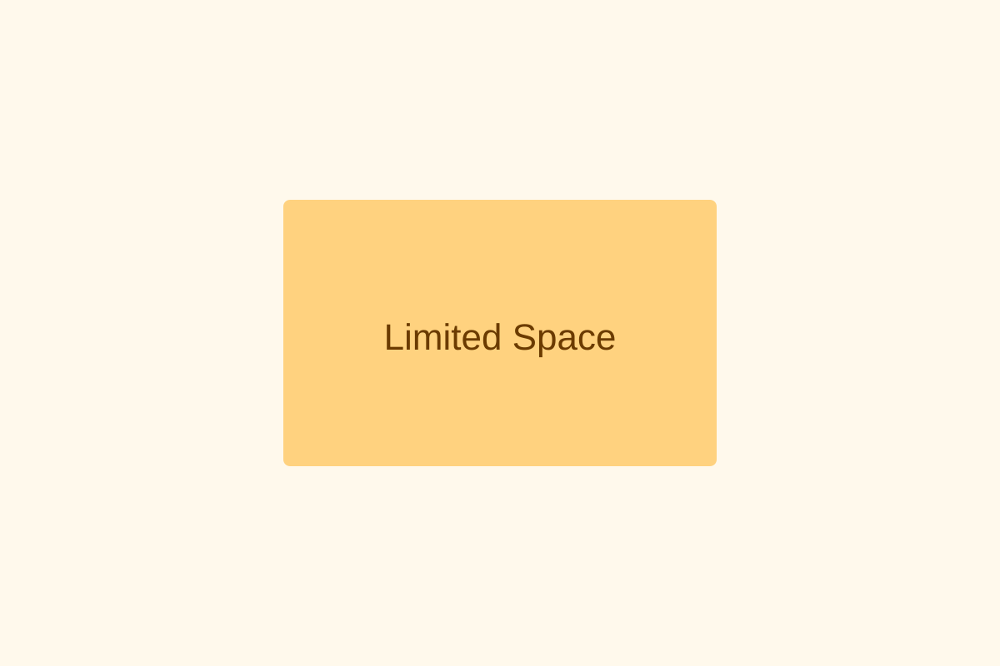
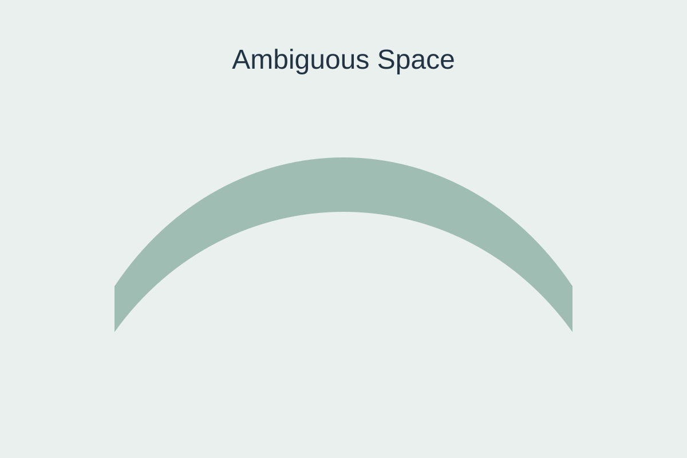
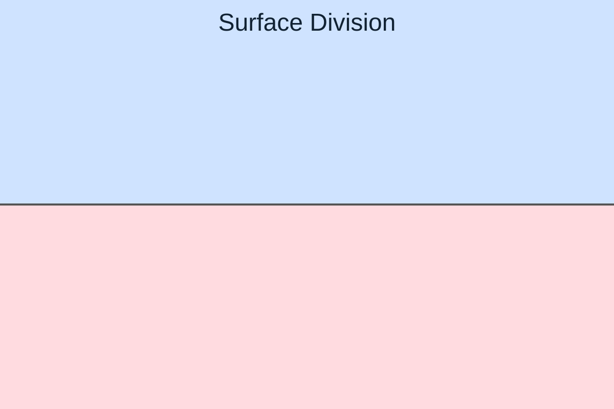

Response 3 - Assignment: Space
This page contains six standalone images (placeholders). Replace these placeholders with your original photographs taken at a single location. Present images in the order below and include captions identifying depth cues where requested.
1. Deep space
Use at least two depth cues. Caption (example): overlapping and size perspective.

2. Flat space (eliminated depth cues)
Remove depth cues such as overlapping, shading, and perspective.

3. Flat space by reversing depth cues
Identify reversed cues in caption (example): tonal and color separation (foreground darker than background).

4. Limited space
Constrain depth; show compressed or narrow field.

5. Ambiguous space
Space that is difficult to read as near or far.

6. Surface division
Emphasize planes and separations on a surface.

Submission notes
Replace each placeholder image with your original photo files (same order). Include short captions for each image identifying the demonstrated space type and any depth cues used. Then publish the page and share the direct link in the discussion forum.